Describing1Variable
Learning objectives
- Describe the distribution of a single numeric variable using measures of center, spread, and shape.
- Describe the distribution of a single categorical variable using measures of frequencies and proportions/percentages.
- Analyze and interpret the key differences in how various visualizations represent data.
In this worksheet, we will use ggplot and some geom functions to explore univariate distributions: describing 1 variable at a time.
Start your workflow by uploading the tidyverse package which contains the ggplot functions:
We will consider the built-in dataset quakes again. It contains information about earthquakes occurring near Fiji islands since 1964. To refresh our memory, let’s take a look:
Let’s use some univariate graphs and summary statistics to explore the numeric variables in this dataset.
1. Describing 1 numeric variable
When describing numeric variables, we pay attention to what a typical value is (center) and how the values vary from each other (spread), where values are most common and where values are rare (shape).
a. Histogram
Since we can have a wide range of different values, especially for continuous variables, it does not necessarily make sense to visualize what exact value is the most common but rather focus on what range of values is the most common.
A histogram represents how frequent some ranges of values (called bins) are. Let’s use geom_histogram():
# Define the ggplot and the dataframe
ggplot(data = quakes) +
# Use geom_histogram and define mapping aesthetics (we will need more!)
geom_histogram(aes(x = depth)) 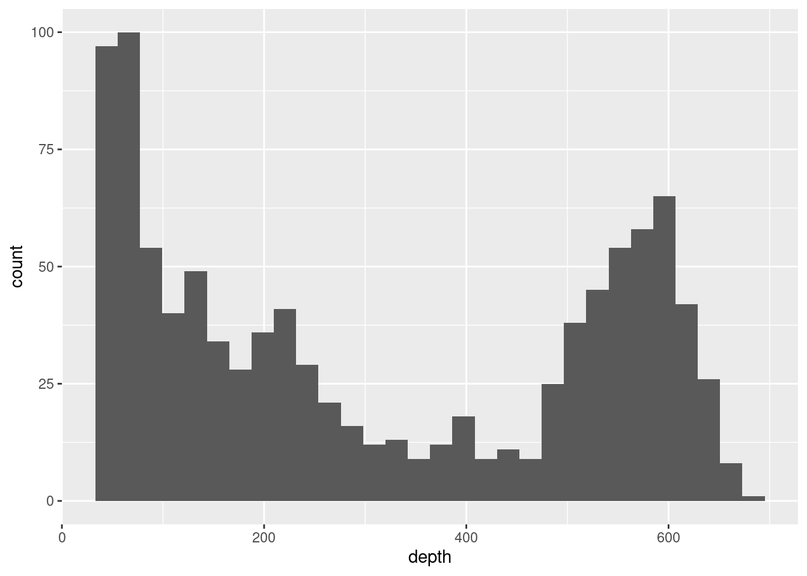
See the message on top of the graph? By default, the number of bins is 30 in ggplot. Can you tell which range of values is the most common?
No, we can’t exactly see that because the bins do not align with the tick marks.
The bins in a histogram define the ranges of values that are represented by bars. We can adjust the bins by setting the binwidth:
ggplot(data = quakes) +
geom_histogram(aes(x = depth),
# Set bin width (we still need more!)
binwidth = 100)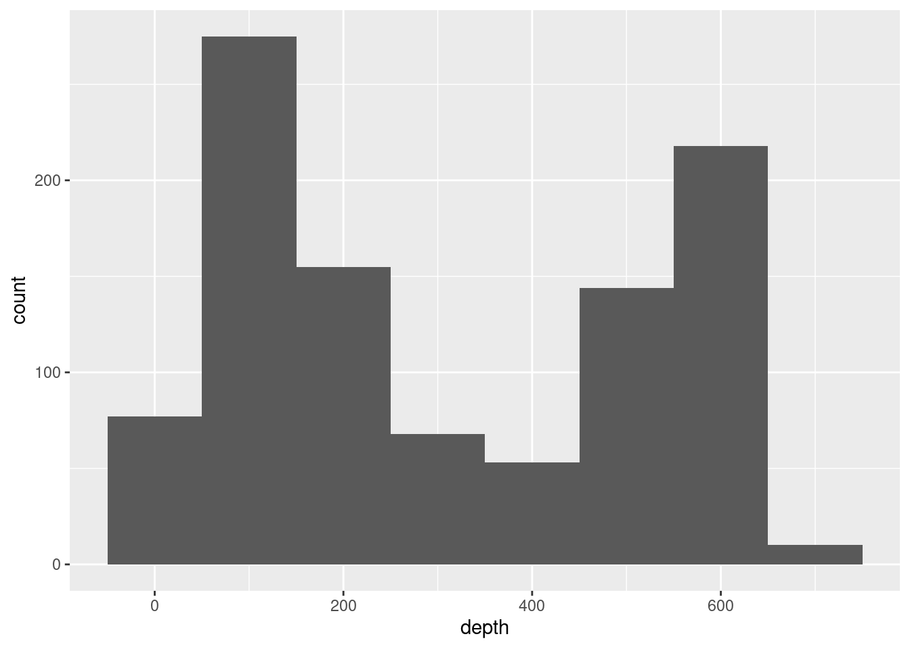
Now can you tell which range of values is the most common?
No, it is still confusing what the limits of the bins are.
We can adjust how the bins are cut by specifying the center (which should always be half of the bin width):
ggplot(data = quakes) +
geom_histogram(aes(x = depth),
# Set bin width and center (that's better!)
binwidth = 100, center = 50)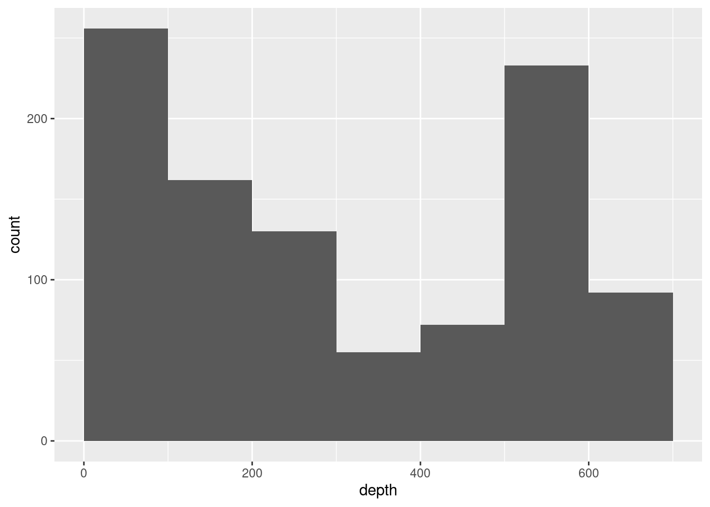
Which range of values appears to be the most common?
Earthquakes with a depth between 0 and 100 km are the most common.
Noticed how the shape of the histogram changes depending on how we define the bins? We usually recommend to have at least 10 different bins to be able to “see” the variation in our data.
Try it! Create a better representation of the distribution of depth! Adjust the previous histogram to represent earthquakes with 1) bins in increments of 50 km, starting at 0, 2) color on the outline with color="blue" and inside of bars with fill="orange", 3) tick marks that matches each bin using scale_x_continuous(), and 4) appropriate labels for the x- and y-axes with labs(). Based on this histogram, at what depth do the earthquakes seem to be most common?
ggplot(data = quakes) +
geom_histogram(aes(x = depth),
# 1) Set bin width and center
binwidth = 50, center = 25,
# 2) Color bars
color = "blue", fill = "orange") +
# 3) Adjust the tick marks of the x-axis
scale_x_continuous(limits = c(0,700), breaks = seq(0,700,50)) +
# 4) Labels
labs(title = "Distribution of the depth of the earthquakes",
subtitle = "For 1,000 eathrquakes that occurred near the Fiji Islands since 1964",
x = "Depth (in km)",
y = "Number of earthquakes")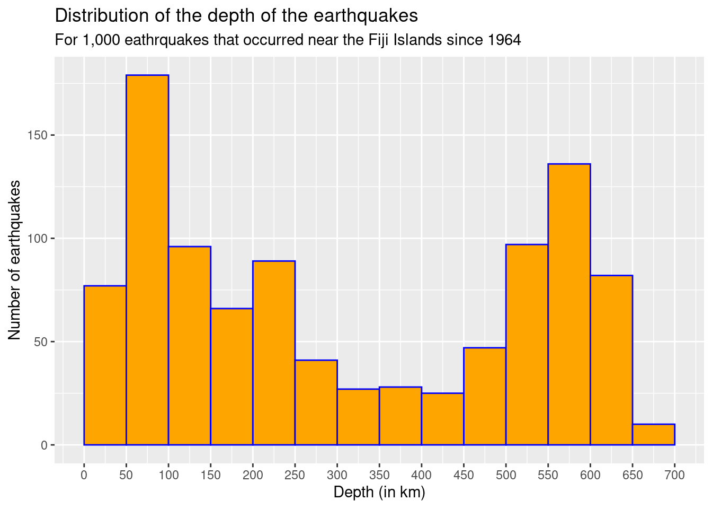
Earthquakes seem to be most common at a depth between 50 and 100 km (and second most common earthquakes can be found at a depth between 550 and 600 km).
b. Boxplot
Another common graph for numeric variables is a boxplot which represents the 5-number summary of a variable: minimum, first quartile, median, third quartile, maximum (delimiting the lower point of the whisker, the lower bar of the box, the solid bar in the box, the upper bar of the box, and the upper point of the whisker, respectively).
ggplot(data = quakes) +
# Use geom_boxplot and define mapping aesthetics
geom_boxplot(aes(x = depth)) 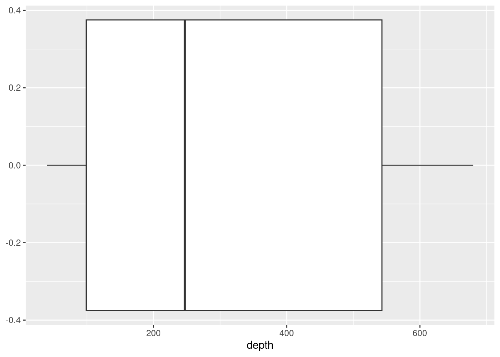
# Or we sometimes represent the distribution vertically for a boxplot
ggplot(data = quakes) +
# Switch to y position in the aesthetics
geom_boxplot(aes(y = depth)) 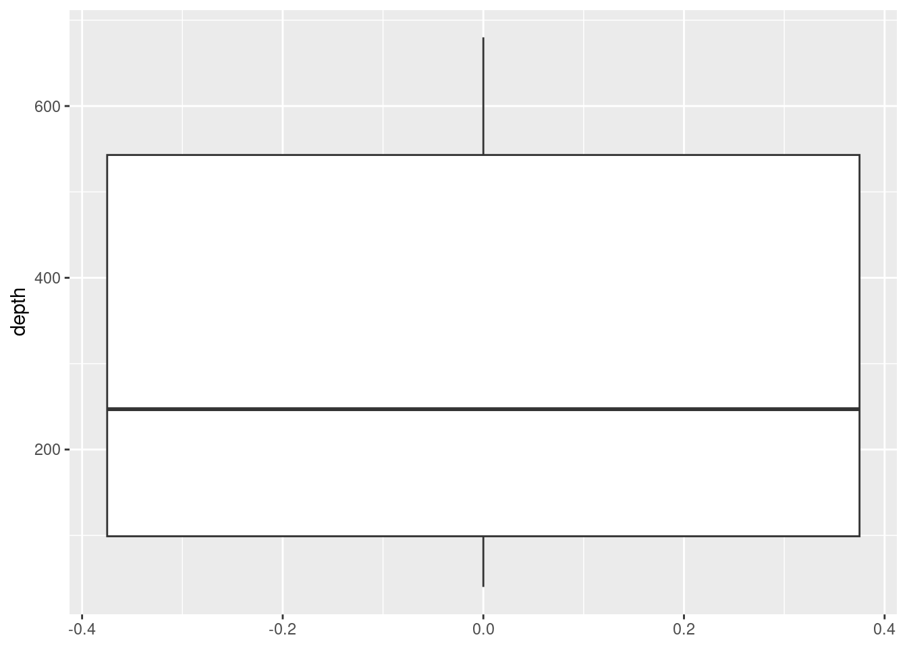
Note that one of the axes has no meaning when representing a single boxplot and the box takes the entire width. We can remove the information that is not relevant and adjust the x-axis as follows:
ggplot(data = quakes) +
geom_boxplot(aes(y = depth)) +
# Remove labels and tick marks that have no meaning
scale_x_continuous(labels = NULL, breaks = NULL, limits = c(-1,1))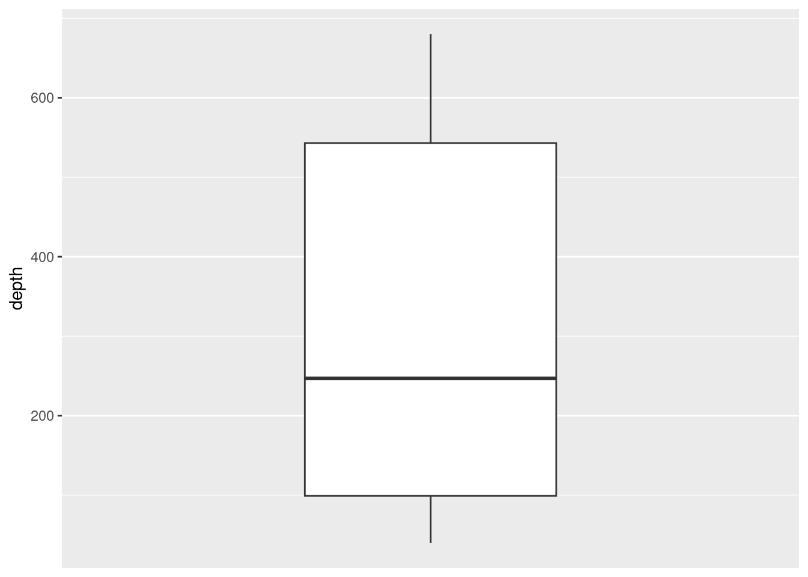
Boxplots sometimes summarize the data too much (just into five numbers) and we might miss important characteristics of the data. What information are we missing compared to what we could see in the histogram for depth?
We don’t see the two peaks we see in the histogram for example.
Try it! Represent the distribution of the magnitude using a boxplot, adjusting the tick marks, adding appropriate labels. Anything you notice in this visualization?
# Boxplot of magnitude
ggplot(data = quakes) +
geom_boxplot(aes(x = mag)) +
# Adjust the tick marks of the axes
scale_x_continuous(breaks = seq(0,7,0.2)) +
scale_y_continuous(labels = NULL, breaks = NULL, limits = c(-1,1)) +
# Labels
labs(title = "Distribution of the magnitudes of earthquakes",
subtitle = "For 1,000 eathrquakes that occurred near the Fiji Islands since 1964",
x = "Magnitude (Richter scale)",
y = "Number of earthquakes")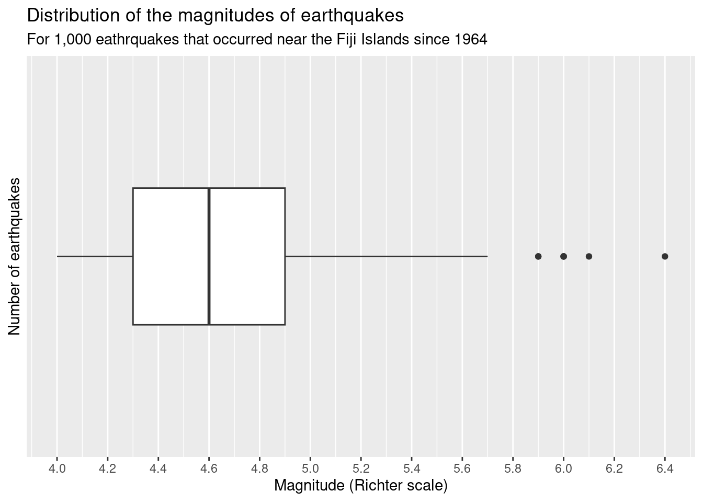
**Half of the earthquakes have a magnitude less than 4.6 (median). Some earthquakes have a much stronger magnitude and appear as outliers (technically R define outliers ad values beyond Quartile + or - 1.5*IQR).**
c. Density and Violin plots
Sometimes, we use density and violin plots to display the “smooth” distribution of a numeric variable:
ggplot(data = quakes) +
# Use geom_density and define mapping aesthetics
geom_density(aes(x = depth)) 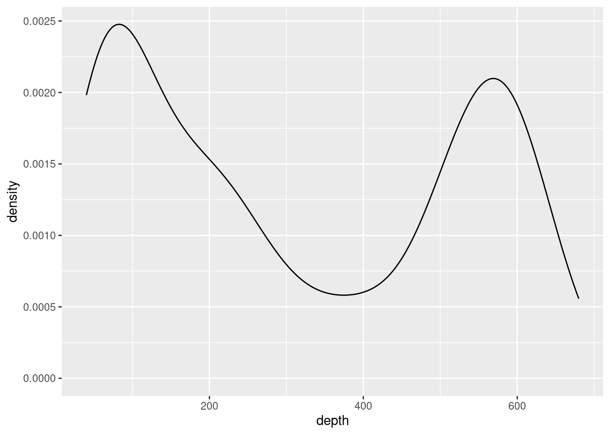
ggplot(data = quakes) +
# Use geom_violin and define mapping aesthetics (note: it needs an x- and y-aesthetics)
geom_violin(aes(x = depth, y = ""))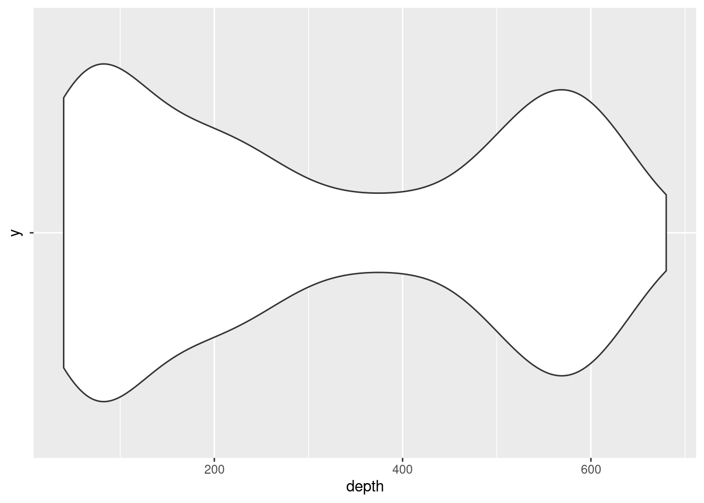
d. Reporting summary statistics
In statistics, center is a measure that represents a typical value for a numeric variable (we typically report the mean or median). The mean is the arithmetic average of the numeric values: it is the sum of all data values divided by the number of observations. The median splits the data in two halves: into the lowest 50% values and the highest 50% values.
## [1] 311.371## [1] 247Are these two values the same? different? Why/Why not?
These values are different: the mean is affected by extreme (large) values so it is greater than the median.
Let’s take this opportunity to introduce a new tidyverse function that will help us create summary statistics: summarize(dataframe, stats functions).
quakes |>
# Find the mean and median
summarize(
mean_depth = mean(depth),
median_depth = median(depth))Another important measure to report is the spread of a numeric variable which represents how values differ from each other. In statistics, we usually use standard deviation or Interquartile Range (IQR). The standard deviation is the average distance between each data point and the mean of the dataset. The IQR splits the middle 50% of the data. (Note: the first quartile (Q1) separates the data from the lowest 25% values and the third quartile (Q3) separate the data from the highest 25% values; then IQR = Q3 - Q1).
## [1] 215.5355## [1] 444Or report all values into one output:
quakes |>
# Summarize with different measures
summarize(
mean_depth = mean(depth),
sd_depth = sd(depth),
median_depth = median(depth),
IQR_depth = IQR(depth))Also, remember the summary() function that provides several stats at once:
## Min. 1st Qu. Median Mean 3rd Qu. Max.
## 40.0 99.0 247.0 311.4 543.0 680.0Note: All of these values (except the Mean) define the features of a boxplot.
Finally, the shape of the distribution of a numeric variable will influence which statistics we prefer to report. We generally talk about two kinds of shapes: (approximately) symmetric (common values are in the middle with few extreme values on each side)or skewed (common values are on one side with few extreme values on the other side). We usually report mean/sd for distributions that are (approximately) symmetric and median/IQR for distributions that are more skewed. But always interpret the distributions in context!
Try it! Represent the distribution of the number of stations using a histogram, adjusting the bins and tick marks, adding appropriate labels. How would you describe the shape of this distribution? Which measure of center seems to better represent a typical value for the number of stations? Write a description of this variable grounded in context.
# Boxplot
ggplot(data = quakes) +
geom_histogram(aes(x = stations), binwidth = 10, center = 5, color = "black") +
# Adjust the tick marks of the x-axis
scale_x_continuous(breaks = seq(0,150,10)) +
# Labels
labs(title = "Distribution of the number of stations reporting earthquakes",
subtitle = "For 1,000 eathrquakes that occurred near the Fiji Islands since 1964",
x = "Number of stations reporting an earthquake",
y = "Number of earthquakes")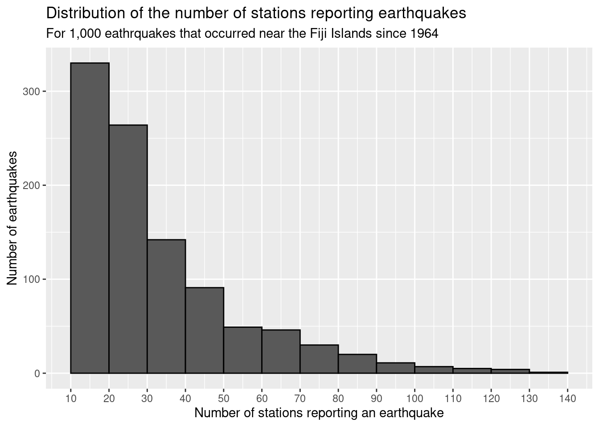
## Min. 1st Qu. Median Mean 3rd Qu. Max.
## 10.00 18.00 27.00 33.42 42.00 132.00Description of shape: Skewed because most earthquakes have about 10-30 stations reporting them and few earthquakes have a much larger number of stations reporting them.
Most appropriate value of center: The median seems to better represent the number of stations typically reporting an earthquake (27) compared to the mean (about 33.4).
Description grounded in context: Half of the earthquakes had less than 27 stations reporting them. The number of stations varied from 10 to 132 with 25% of earthquakes having more than 42 stations reporting them.
2. Describing 1 categorical variable
When describing categorical variables, we pay attention to which category are the most/least common.
Let’s categorize depth as indicating Deep vs Not deep earthquakes:
a. Bar plot
We can represent a single categorical variable with a bar graph using geom_bar() where the height of the bar of each category represents how frequently a category appears in the dataset.
quakes |>
mutate(depth_cat = ifelse(depth > 300, "Deep", "Not deep")) |>
# Make a bar plot
ggplot() +
# Use geom_bar and define mapping aesthetics
geom_bar(aes(x = depth_cat))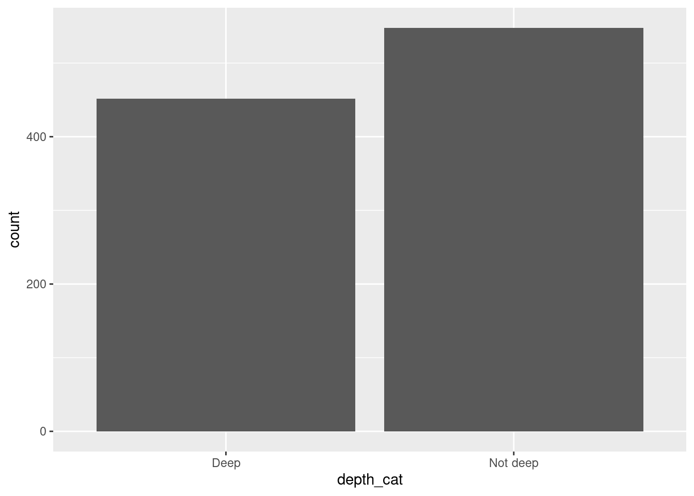
Less earthquakes were considered as deep compared to not deep.
Try it! Create the variable depth_cat that split depth into 3 categories: a depth less than 70 km is considered “Shallow”, a depth more than 300 km is considered “Deep”, and “Intermediate” in between. Also improve this plot with labels. What do you notice in this graph?
quakes |>
# Create a variable
mutate(depth_cat = case_when(
depth <= 70 ~ "Shallow",
depth > 70 & depth <= 300 ~ "Intermediate",
depth > 300 ~ "Deep")) |>
# Make a bar plot
ggplot() +
geom_bar(aes(x = depth_cat)) +
# Add labels
labs(title = "Distribution of the earthquakes by depth categories",
subtitle = "For 1,000 eathrquakes that occurred near the Fiji Islands since 1964",
x = "Depth category",
y = "Number of earthquakes")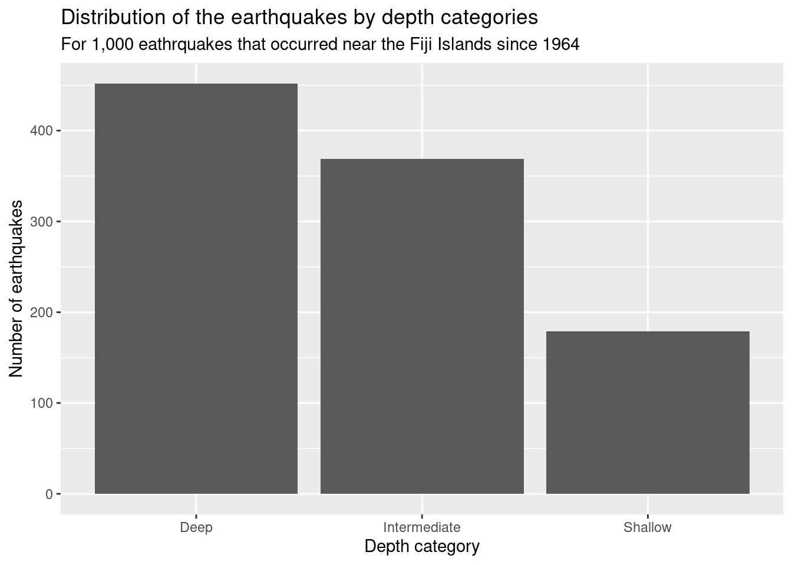
Most earthquakes were considered as deep while less earthquakes occurred in shallow depths.
b. Reporting summary statistics
When reporting statistics about a categorical variable, we often include counts (frequencies) or proportions (relative frequencies). We can use the function table to find counts but we first need to save the variable into a new dataframe:
# Save the new variable
new_quakes <- quakes |>
mutate(depth_cat = ifelse(depth > 300, "Deep", "Not deep"))Then apply the table() function to this new variable:
##
## Deep Not deep
## 452 548There are 452 earthquakes that were categorized as Deep and 548 earthquakes that were categorized as Not deep.
Then we can use the function prop.table on the counts to find proportions:
##
## Deep Not deep
## 0.452 0.548Exactly 45.2% of the earthquakes were categorized as Deep .
Another way to find the counts and proportions for each category is using another tidyverse function called group_by: combined with the summarize function that allows us to find summaries by groups (n() is used to count observations in the groups):
new_quakes |>
# Split the data in groups
group_by(depth_cat) |>
# Summarize per group
summarize(count = n(),
proportion = n() / nrow(new_quakes))All summary statistics in one table!
Try it! Create a new variable called depth_median to categorize values less than/more than the median depth. Represent the distribution of that new variable with the appropriate graph. Why does it make sense to see what we see?
quakes |>
# Create a new variable with mutate
mutate(depth_median = ifelse(depth < median(depth),
"less than the median",
"more than the median")) |>
# Create a bar graph
ggplot() +
geom_bar(aes(x = depth_median)) +
# Add labels
labs(title = "Distribution of the earthquakes by depth categories",
subtitle = "For 1,000 eathrquakes that occurred near the Fiji Islands since 1964",
x = "Comparing depth to median",
y = "Number of earthquakes")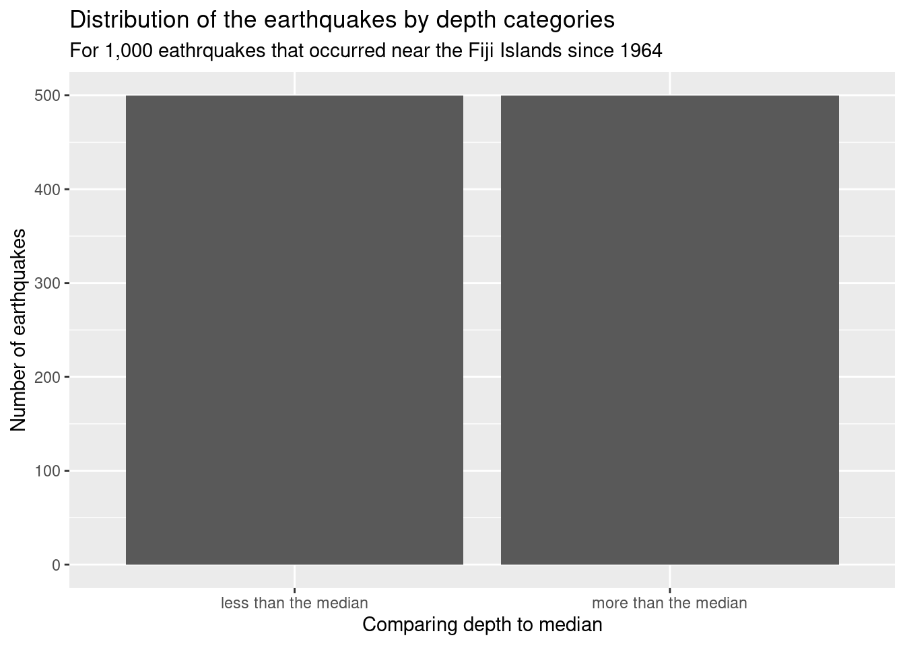
The median splits the data in half so it makes sense to see that there is the same amount of earthquakes in both groups.
Your turn!
Analyze some characteristics about students enrolled in my sections this semester in a group of 2:
- Download one of a datasets (or all of them) containing individual abouvariables about students enrolled in this class.
- Import this dataset into RStudio. Make a plot to represent the distribution of the variable and report appropriate summary statistics.
- Write a description of this variable grounded in context.
Write sentences here.
- Copy/paste your plot, statistics, and description in this slideshow.
Recommended Resources
- Worksheet keys are posted at the end of the week on Canvas under Programming Tools.
- Recommended readings: Visualizing data distributions, Summary Statistics